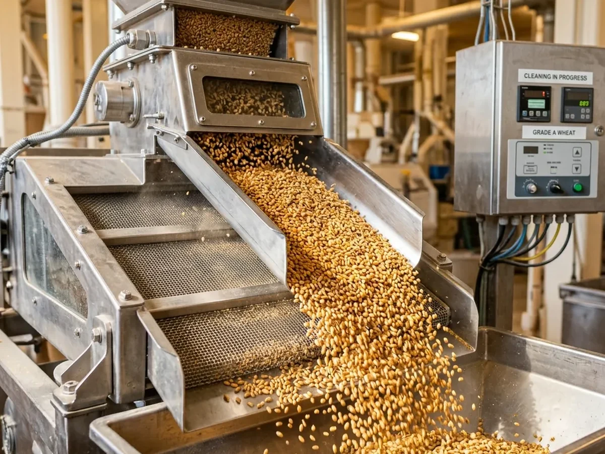
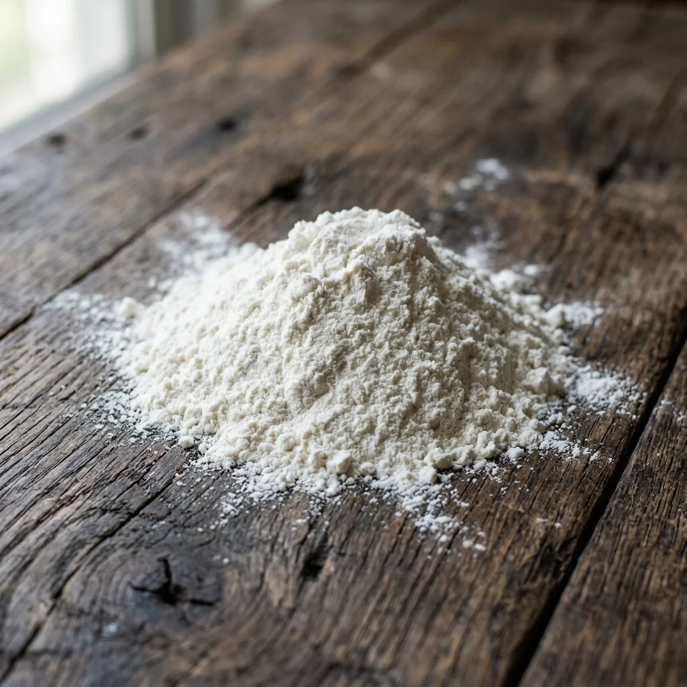
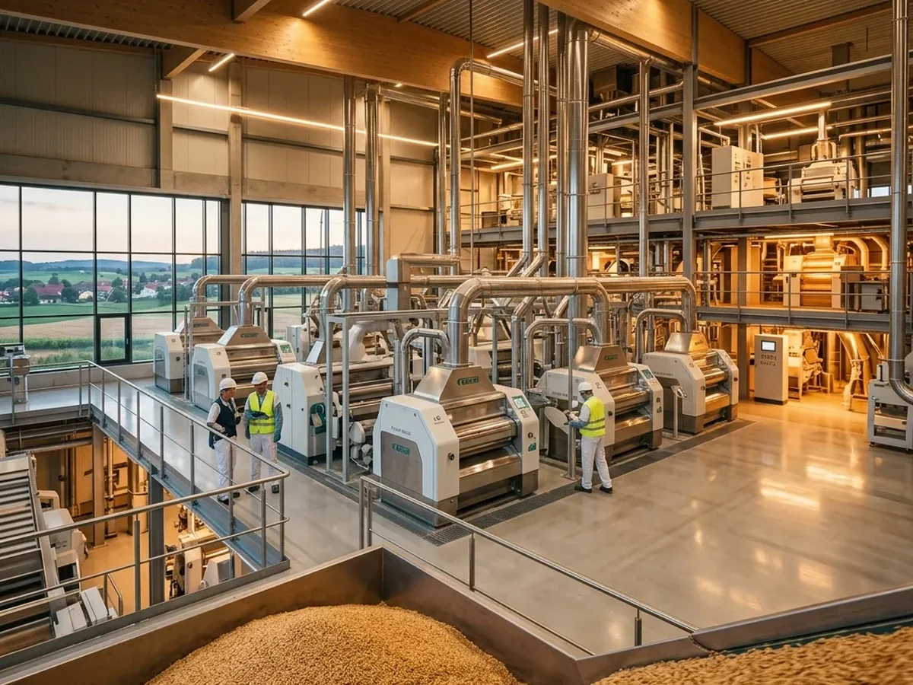

Why Wheat Selection Directly Impacts Flour Consistency
A practical look at how grain moisture, cleanliness, and kernel quality shape flour behavior in daily production.
Read ArticlePractical updates from Kashi on wheat quality, milling standards, and bakery performance.

A practical look at how grain moisture, cleanliness, and kernel quality shape flour behavior in daily production.
Read Article
Understanding when to use Maida, bakery blend, or Suji can reduce waste and improve finished product texture.
Read Article
How controlled equipment, scheduled checks, and disciplined handling help maintain safe and reliable flour quality.
Read Article